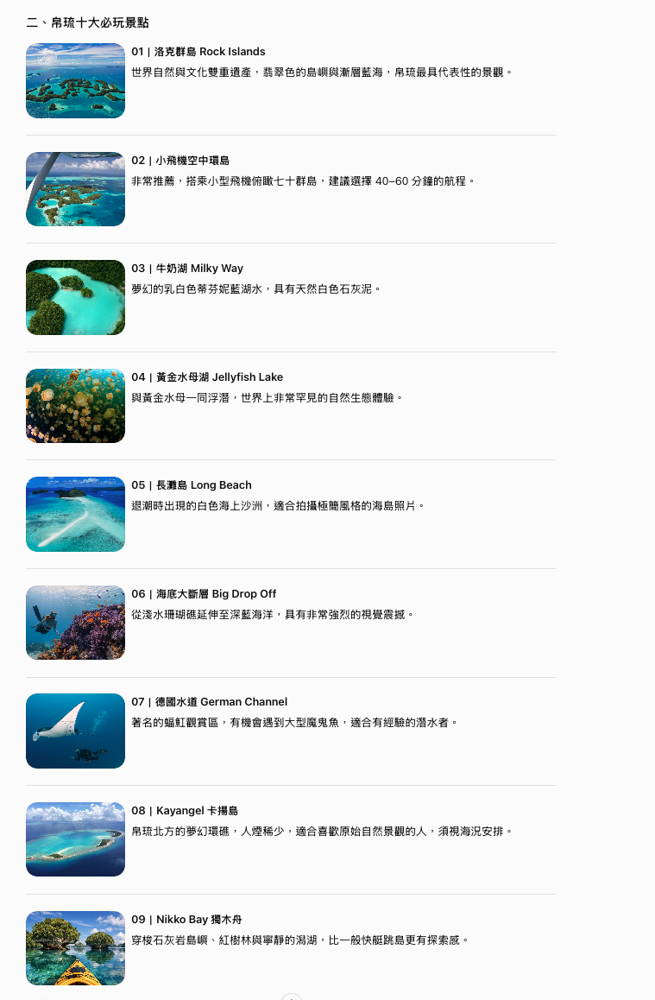

帛琉五天四夜自由行
洛克群島浮潛、本島瀑布、紅樹林獨木舟與博物館。
- 住宿基地
- 科羅
- 住宿晚數
- 4 晚
- 比台灣快
- 1 小時
先確認去回程相隔四晚，再訂房與船團。 查詢中華航空航線
每日行程
行程時間皆為帛琉當地時間。
- 上午
- 桃園出發，依班機時間調整
- 下午
- 抵達 ROR，搭飯店接駁前往科羅，入住後在市區補水、換少量美元現金
- 晚上
- 科羅市區晚餐，確認隔日接送時間與浮潛裝備。晚到就直接入住
- 上午
- 約 – 由科羅出發，搭快艇進洛克群島南潟湖。優先安排牛奶湖和一處適合初學者的淺礁
- 下午
- 午餐後依潮汐安排長沙灘或第二處浮潛點，約 – 回科羅
- 晚上
- 市區晚餐，休息
- 上午
- 約 包車出發，前往恩加德馬烏瀑布（Ngardmau Waterfall），預留約 2–3 小時步行、休息與折返
- 下午
- 午餐後往恩吉魯穆德（Ngerulmud）看國會建築外觀，再回科羅。步道因大雨關閉時，改逛科羅博物館
- 晚上
- 市區晚餐，確認隔日風浪與出團狀態
- 上午
- 約 參加導覽，划獨木舟探索潟湖與紅樹林。想減少體力負擔可選半日團
- 下午
- 半日團結束後，參觀 Etpison Museum 的傳統舟具、錢幣與木雕。若訂到全天團，博物館移至第 1 天或第 5 天的空檔
- 晚上
- 整理行李，確認隔日機場接送
- 上午
- 退房，依航班寄放行李。晚班機可安排 Belau National Museum 或市區午餐
- 下午
- 依航班出發，規劃起飛前約 3 小時抵達機場
- 晚上
- 依實際航班抵達桃園
出海提醒與景點連結
出海時間為規劃用。長沙灘能否登陸取決於潮汐。獨木舟可詢問是否有半日行程、最低成團人數及救生衣尺寸。館方營業日與售票時間建議出發前確認。 洛克群島旅客指南 · 獨木舟業者 · Etpison Museum · Belau National Museum
景點導覽
帛琉景點地圖
 點選圖片，在新分頁開啟原圖放大查看。
點選圖片，在新分頁開啟原圖放大查看。
第 3 天景點說明
恩加德馬烏瀑布（天使瀑布）
沿森林步道走到北島瀑布。行程已預留來回健行與休息時間，大雨過後請先確認步道是否開放。
帛琉觀光局恩吉魯穆德國會建築
位於梅萊凱奧克州的山丘。行程安排看建築外觀，也可從高處眺望東岸。
帛琉觀光局
第 4 天景點說明
紅樹林獨木舟與 Nikko Bay
跟著導覽從水面近看石灰岩島嶼和寧靜潟湖。預訂半日團時，可確認是否會經過 Nikko Bay 和紅樹林。
獨木舟路線Etpison Museum
可留意帛琉的傳統錢幣、帛琉與雅浦島的舟具，以及用木雕呈現在地故事的故事板。
館藏介紹
帛琉十大必玩景點
-

洛克群島 Rock Islands
翡翠色島嶼與深淺交錯的藍海，是帛琉代表性的景觀，也是世界自然與文化雙重遺產。
第 2 天行程
-
小飛機空中環島
搭小型飛機俯瞰七十群島。可詢問約 40–60 分鐘的觀景航程。
-
牛奶湖 Milky Way
乳白與藍綠色交錯的潟湖，湖底有天然白色石灰泥。
第 2 天行程
-
黃金水母湖 Jellyfish Lake
有機會與黃金水母一同浮潛。出發前請確認湖區開放與近期水母狀況。
第 2 天可選
-
長灘島 Long Beach
退潮時露出的白色沙洲，適合拍攝海島風景。能否登陸視潮汐而定。
第 2 天視潮汐
-
海底大斷層 Big Drop Off
淺水珊瑚礁旁是陡降至深藍海域的礁壁，可依海況詢問適合的導覽。
-
德國水道 German Channel
知名魟魚觀賞區，有機會遇見大型鬼蝠魟，適合有經驗的潛水者。
-
卡揚島 Kayangel
帛琉北方人煙稀少的環礁，適合看原始自然景觀。船程須視海況安排。
-
Nikko Bay 獨木舟
划過石灰岩島嶼、紅樹林與寧靜潟湖，可向業者指定詢問 Nikko Bay 路線。
第 4 天可選
-

天使瀑布 Ngardmau Waterfall
沿熱帶森林步道走到瀑布，體驗帛琉本島的山林景色。
第 3 天行程
海況備案與門票
第 2 天停航怎麼辦？
先請船團確認能否改到第 3 或第 4 天。
- 仍無法出海
- 改逛科羅雙館，在市區吃午餐，再回住宿休息。
洛克群島許可
- 一般許可
- USD 50
- 含水母湖
- USD 100
以上為每位成人的預算。含水母湖的許可也涵蓋其他指定觀光區。訂團前請確認費用、效期、第 4 天能否沿用，以及團費是否已包含許可。
科羅州政府許可說明
水母湖列為可選
可加到第 2 天。付費前先確認湖區是否開放、近期水母狀況，以及是否會取代其他停靠點。
浮潛與步道注意事項
浮潛時穿救生衣、跟隨導遊，依能力選擇水域。穿防磨衣遮陽，避免踩踏珊瑚。
瀑布步道穿止滑鞋，水位上升或步道封閉時就折返。
帛琉觀光局保育規範
每人預算
NT$35,000–57,000
五天四夜，含往返機票
- 往返機票 桃園－科羅經濟艙
- NT$16,000–24,000
- 科羅住宿 四晚
- 約 NT$5,760–9,600USD 180–300
- 海上活動 快艇浮潛、獨木舟導覽
- 約 NT$5,760–9,600USD 180–300
- 當地交通 機場接駁、陸遊包車
- 約 NT$2,240–4,160USD 70–130
- 餐飲
- 約 NT$2,880–4,800USD 90–150
- 許可與門票 洛克群島、步道、博物館
- 約 NT$2,240–4,480USD 70–140
- 當地費用小計
- 約 NT$18,880–32,640USD 590–1,020